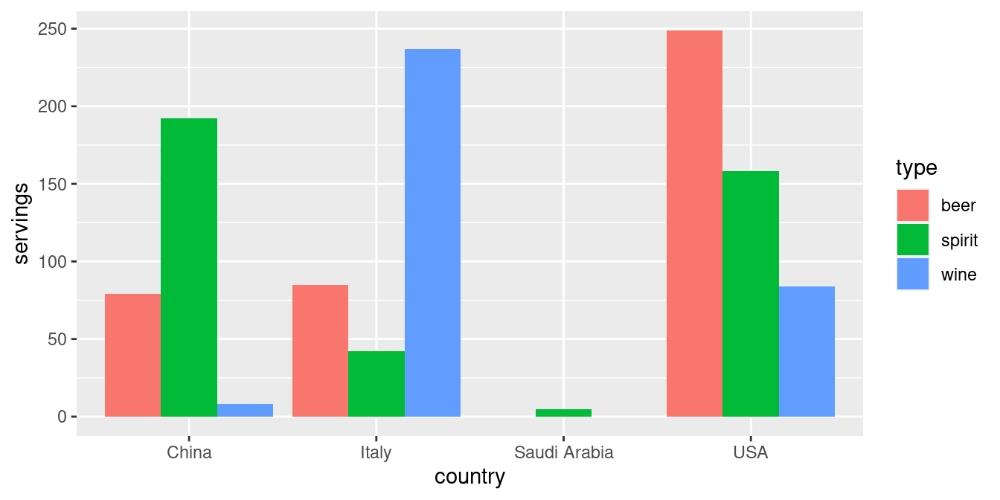
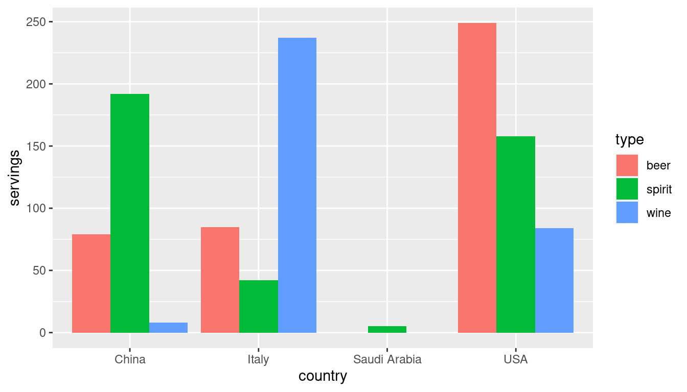
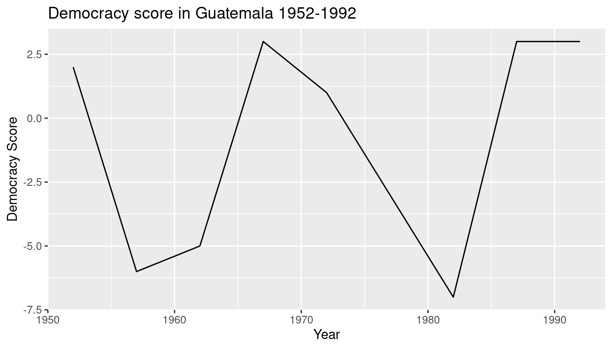

library(dplyr)
library(ggplot2)
library(readr)
library(tidyr)
library(nycflights13)
library(fivethirtyeight)4 Data Importing & “Tidy Data”
In Subsection 1.2.2 we introduced the concept of a data frame: a rectangular spreadsheet-like representation of data in R where the rows correspond to observations and the columns correspond to variables describing each observation. In Section 1.4, we started exploring our first data frame: the flights data frame included in the nycflights13 package. In Chapter 2 we created visualizations based on the data included in flights and other data frames such as weather. In Chapter 3, we learned how to wrangle data, in other words take existing data frames and transform/ modify them to suit our analysis goals.
In this final chapter of the “Data Science via the tidyverse” portion of the book, we extend some of these ideas by discussing a type of data formatting called “tidy” data. You will see that having data stored in “tidy” format is about more than what the colloquial definition of the term “tidy” might suggest: having your data “neatly organized.” Instead, we define the term “tidy” in a more rigorous fashion, outlining a set of rules by which data can be stored, and the implications of these rules for analyses.
Although knowledge of this type of data formatting was not necessary for our treatment of data visualization in Chapter 2 and data wrangling in Chapter 3 since all the data was already in “tidy” format, we’ll now see this format is actually essential to using the tools we covered in these two chapters. Furthermore, it will also be useful for all subsequent chapters in this book when we cover regression and statistical inference. First however, we’ll show you how to import spreadsheet data for use in R.
Packages Needed
Let’s load all the packages needed for this chapter (this assumes you’ve already installed them). If needed, read Section 1.3 for information on how to install and load R packages.
4.1 Importing data
Up to this point, we’ve almost entirely used data stored inside of an R package. Say instead you have your own data saved on your computer or somewhere online? How can you analyze this data in R? Spreadsheet data is often saved in one of the following formats:
A Comma Separated Values
.csvfile. You can think of a.csvfile as a bare-bones spreadsheet where:- Each line in the file corresponds to one row of data/one observation.
- Values for each line are separated with commas. In other words, the values of different variables are separated by commas.
- The first line is often, but not always, a header row indicating the names of the columns/variables.
An Excel
.xlsxfile. This format is based on Microsoft’s proprietary Excel software. As opposed to a bare-bones.csvfiles,.xlsxExcel files contain a lot of meta-data, or put more simply, data about the data. (Recall we saw a previous example of meta-data in Section 3.4 when adding “group structure” meta-data to a data frame by using thegroup_by()verb.) Some examples of spreadsheet meta-data include the use of bold and italic fonts, colored cells, different column widths, and formula macros.A Google Sheets file, which is a “cloud” or online-based way to work with a spreadsheet. Google Sheets allows you to download your data in both comma separated values
.csvand Excel.xlsxformats however: go to the Google Sheets menu bar -> File -> Download as -> Select “Microsoft Excel” or “Comma-separated values.”
We’ll cover two methods for importing .csv and .xlsx spreadsheet data in R: one using the R console and the other using RStudio’s graphical user interface, abbreviated a GUI.
4.1.1 Using the console
First, let’s import a Comma Separated Values .csv file of data directly off the internet. The .csv file dem_score.csv accessible at https://moderndive.com/data/dem_score.csv contains ratings of the level of democracy in different countries spanning 1952 to 1992. Let’s use the read_csv() function from the readr package to read it off the web, import it into R, and save it in a data frame called dem_score
library(readr)
dem_score <- read_csv("https://moderndive.com/data/dem_score.csv")
dem_score# A tibble: 96 × 10
country `1952` `1957` `1962` `1967` `1972` `1977` `1982` `1987` `1992`
<chr> <dbl> <dbl> <dbl> <dbl> <dbl> <dbl> <dbl> <dbl> <dbl>
1 Albania -9 -9 -9 -9 -9 -9 -9 -9 5
2 Argentina -9 -1 -1 -9 -9 -9 -8 8 7
3 Armenia -9 -7 -7 -7 -7 -7 -7 -7 7
4 Australia 10 10 10 10 10 10 10 10 10
5 Austria 10 10 10 10 10 10 10 10 10
6 Azerbaijan -9 -7 -7 -7 -7 -7 -7 -7 1
7 Belarus -9 -7 -7 -7 -7 -7 -7 -7 7
8 Belgium 10 10 10 10 10 10 10 10 10
9 Bhutan -10 -10 -10 -10 -10 -10 -10 -10 -10
10 Bolivia -4 -3 -3 -4 -7 -7 8 9 9
# … with 86 more rowsIn this dem_score data frame, the minimum value of -10 corresponds to a highly autocratic nation whereas a value of 10 corresponds to a highly democratic nation. We’ll revisit the dem_score data frame in a case study in the upcoming Section 4.3.
Note that the read_csv() function included in the readr package is different than the read.csv() function that comes installed with R by default. While the difference in the names might seem near meaningless (an _ instead of a .), the read_csv() function is in our opinion easier to use since it can more easily read data off the web and generally imports data at a much faster speed.
4.1.2 Using RStudio’s interface
Let’s read in the exact same data saved in Excel format, but this time via RStudio’s graphical interface instead of via the R console. First download the Excel file dem_score.xlsx by clicking here, then
- Go to the Files panel of RStudio.
- Navigate to the directory i.e. folder on your computer where the downloaded
dem_score.xlsxExcel file is saved. - Click on
dem_score.xlsx. - Click “Import Dataset…”
At this point you should see an image like this:

After clicking on the “Import” button on the bottom right RStudio, RStudio will save this spreadsheet’s data in a data frame called dem_score and display its contents in the spreadsheet viewer. Furthermore, note in the bottom right of the above image there exists a “Code Preview”: you can copy and paste this code to reload your data again later automatically instead of repeating the above manual point-and-click process.
4.2 Tidy data
Let’s now switch gears and learn about the concept of “tidy” data format by starting with a motivating example. Let’s consider the drinks data frame included in the fivethirtyeight data. Run the following:
drinks# A tibble: 193 × 5
country beer_servings spirit_servings wine_servings total_litres_…¹
<chr> <int> <int> <int> <dbl>
1 Afghanistan 0 0 0 0
2 Albania 89 132 54 4.9
3 Algeria 25 0 14 0.7
4 Andorra 245 138 312 12.4
5 Angola 217 57 45 5.9
6 Antigua & Barbuda 102 128 45 4.9
7 Argentina 193 25 221 8.3
8 Armenia 21 179 11 3.8
9 Australia 261 72 212 10.4
10 Austria 279 75 191 9.7
# … with 183 more rows, and abbreviated variable name
# ¹total_litres_of_pure_alcoholAfter reading the help file by running ?drinks, we see that drinks is a data frame containing results from a survey of the average number of servings of beer, spirits, and wine consumed for 193 countries. This data was originally reported on the data journalism website FiveThirtyEight.com in Mona Chalabi’s article “Dear Mona Followup: Where Do People Drink The Most Beer, Wine And Spirits?”
Let’s apply some of the data wrangling verbs we learned in Chapter 3 on the drinks data frame. Let’s
filter()thedrinksdata frame to only consider 4 countries (the United States, China, Italy, and Saudi Arabia) thenselect()all columns excepttotal_litres_of_pure_alcoholby using-sign, thenrename()the variablesbeer_servings,spirit_servings, andwine_servingstobeer,spirit, andwinerespectively
and save the resulting data frame in drinks_smaller.
drinks_smaller <- drinks %>%
filter(country %in% c("USA", "China", "Italy", "Saudi Arabia")) %>%
select(-total_litres_of_pure_alcohol) %>%
rename(beer = beer_servings, spirit = spirit_servings, wine = wine_servings)
drinks_smaller# A tibble: 4 × 4
country beer spirit wine
<chr> <int> <int> <int>
1 China 79 192 8
2 Italy 85 42 237
3 Saudi Arabia 0 5 0
4 USA 249 158 84Using the drinks_smaller data frame, how would we create the side-by-side AKA dodged barplot in Figure 4.1? Recall we saw barplots displaying two categorical variables in Section 2.8.3.

Let’s break down the Grammar of Graphics:
The categorical variable
countrywith four levels (China, Italy, Saudi Arabia, USA) would have to be mapped to thex-position of the bars.The numerical variable
servingswould have to be mapped to they-position of the bars, in other words the height of the bars.The categorical variable
typewith three levels (beer, spirit, wine) who have to be mapped to thefillcolor of the bars.
Observe however that drinks_smaller has three separate variables for beer, spirit, and wine, whereas in order to recreate the side-by-side AKA dodged barplot in Figure 4.1 we would need a single variable type with three possible values: beer, spirit, and wine, which we would then map to the fill aesthetic. In other words, for us to be able to create the barplot in Figure 4.1, our data frame would have to look like this:
drinks_smaller_tidy# A tibble: 12 × 3
country type servings
<chr> <chr> <int>
1 China beer 79
2 China spirit 192
3 China wine 8
4 Italy beer 85
5 Italy spirit 42
6 Italy wine 237
7 Saudi Arabia beer 0
8 Saudi Arabia spirit 5
9 Saudi Arabia wine 0
10 USA beer 249
11 USA spirit 158
12 USA wine 84Let’s compare the drinks_smaller_tidy with the drinks_smaller data frame from earlier:
drinks_smaller# A tibble: 4 × 4
country beer spirit wine
<chr> <int> <int> <int>
1 China 79 192 8
2 Italy 85 42 237
3 Saudi Arabia 0 5 0
4 USA 249 158 84Observe that while drinks_smaller and drinks_smaller_tidy are both rectangular in shape and contain the same 12 numerical values (3 alcohol types \(\times\) 4 countries), they are formatted differently. drinks_smaller is formatted in what’s known as “wide” format, whereas drinks_smaller_tidy is formatted in what’s known as “long/narrow”. In the context of using R, long/narrow format is also known as “tidy” format. Furthermore, in order to use the ggplot2 and dplyr packages for data visualization and data wrangling, your input data frames must be in “tidy” format. So all non-“tidy” data must be converted to “tidy” format first.
Before we show you how to convert non-“tidy” data frames like drinks_smaller to “tidy” data frames like drinks_smaller_tidy, let’s go over the explicit definition of “tidy” data.
4.2.1 Definition of “tidy” data
You have surely heard the word “tidy” in your life:
“Tidy up your room!”
“Please write your homework in a tidy way so that it is easier to grade and to provide feedback.”
Marie Kondo’s best-selling book The Life-Changing Magic of Tidying Up: The Japanese Art of Decluttering and Organizing and Netflix TV series Tidying Up with Marie Kondo.
“I am not by any stretch of the imagination a tidy person, and the piles of unread books on the coffee table and by my bed have a plaintive, pleading quality to me - ‘Read me, please!’” - Linda Grant
What does it mean for your data to be “tidy”? While “tidy” has a clear English meaning of “organized”, “tidy” in the context of data science using R means that your data follows a standardized format. We will follow Hadley Wickham’s definition of tidy data here (Wickham 2014):
A dataset is a collection of values, usually either numbers (if quantitative) or strings AKA text data (if qualitative). Values are organised in two ways. Every value belongs to a variable and an observation. A variable contains all values that measure the same underlying attribute (like height, temperature, duration) across units. An observation contains all values measured on the same unit (like a person, or a day, or a city) across attributes.
Tidy data is a standard way of mapping the meaning of a dataset to its structure. A dataset is messy or tidy depending on how rows, columns and tables are matched up with observations, variables and types. In tidy data:
- Each variable forms a column.
- Each observation forms a row.
- Each type of observational unit forms a table.

For example, say you have the following table of stock prices in Table 4.1:
| Date | Boeing Stock Price | Amazon Stock Price | Google Stock Price |
|---|---|---|---|
| 2009-01-01 | $173.55 | $174.90 | $174.34 |
| 2009-01-02 | $172.61 | $171.42 | $170.04 |
Although the data are neatly organized in a rectangular spreadsheet-type format, they are not in tidy format because while there are three variables corresponding to three unique pieces of information (Date, Stock Name, and Stock Price), there are not three columns. In “tidy” data format each variable should be its own column, as shown in Table 4.2). Notice that both tables present the same information, but in different formats.
| Date | Stock Name | Stock Price |
|---|---|---|
| 2009-01-01 | Boeing | $173.55 |
| 2009-01-01 | Amazon | $174.90 |
| 2009-01-01 | $174.34 | |
| 2009-01-02 | Boeing | $172.61 |
| 2009-01-02 | Amazon | $171.42 |
| 2009-01-02 | $170.04 |
Now we have the requisite three columns Date, Stock Name, and Stock Price. On the other hand, consider the data in Table 4.3.
| Date | Boeing Price | Weather |
|---|---|---|
| 2009-01-01 | $173.55 | Sunny |
| 2009-01-02 | $172.61 | Overcast |
In this case, even though the variable “Boeing Price” occurs just like in our non-“tidy” data in Table 4.1), the data is “tidy” since there are three variables corresponding to three unique pieces of information: Date, Boeing stock price, and the weather that particular day.
4.2.2 Converting to “tidy” data
In this book so far, you’ve only seen data frames that were already in “tidy” format. Furthermore for the rest of this book, you’ll mostly only see data frames that are already in “tidy” format as well. This is not always the case however with data in the wild. If your original data frame is in wide i.e. non-“tidy” format and you would like to use the ggplot2 package for data visualization or the dplyr package for data wrangling, you will first have to convert it to “tidy” format using the pivot_longer() function in the tidyr package (Wickham and Girlich 2022).
Going back to our drinks_smaller data frame from earlier:
drinks_smaller# A tibble: 4 × 4
country beer spirit wine
<chr> <int> <int> <int>
1 China 79 192 8
2 Italy 85 42 237
3 Saudi Arabia 0 5 0
4 USA 249 158 84We convert it to “tidy” format by using the pivot_longer() function from the tidyr package as follows:
# tidy drinks_smaller
drinks_smaller_tidy <- drinks_smaller %>%
pivot_longer(
cols = -country,
names_to = "type",
values_to = "servings"
)
# print
drinks_smaller_tidy# A tibble: 12 × 3
country type servings
<chr> <chr> <int>
1 China beer 79
2 China spirit 192
3 China wine 8
4 Italy beer 85
5 Italy spirit 42
6 Italy wine 237
7 Saudi Arabia beer 0
8 Saudi Arabia spirit 5
9 Saudi Arabia wine 0
10 USA beer 249
11 USA spirit 158
12 USA wine 84We set the arguments to pivot_longer() as follows:
The first argument,
cols, are the columns you either want to or don’t want to tidy. Observe how we set this to-countryindicating that we don’t want to tidy thecountryvariable indrinks_smallerwhich leavesbeer,spirit, andwineto be tidied.names_tois the name of the column/variable in the new “tidy” frame that contains the column names of the original data frame that you want to tidy. Observe how we setnames_to = "type"and in the resultingdrinks_smaller_tidythe columntypecontains the three types of alcoholbeer,spirit, andwine.values_tois the name of the column/variable in the “tidy” frame that contains the rows and columns of values in the original data frame you want to tidy. Observe how we setvalues_to = "servings"and in the resultingdrinks_smaller_tidythe columnservingscontains the 4 \(\times\) 3 = 12 numerical values.
The first argument, cols, is a little nuanced, so let’s consider another example. Note the code below is very similar, but now the first argument specifies which columns we’d want to tidy c(beer, spirit, wine), instead of the columns we don’t want to tidy -country. Note the use of c() to create a vector of the columns in drinks_smaller that we’d like to tidy. If you run the code below, you’ll see that the result is as drinks_smaller_tidy.
# tidy drinks_smaller
drinks_smaller %>%
pivot_longer(
cols = c(beer, spirit, wine),
names_to = "type",
values_to = "servings"
)With our drinks_smaller_tidy “tidy” format data frame, we can now produce a side-by-side AKA dodged barplot using geom_col() and not geom_bar(), since we would like to map the servings variable to the y-aesthetic of the bars.
ggplot(drinks_smaller_tidy, aes(x=country, y=servings, fill=type)) +
geom_col(position = "dodge")
Converting “wide” format data to “tidy” format often confuses new R users. The only way to learn to get comfortable with the pivot_longer() function is with practice, practice, and more practice. For example, see the examples in the bottom of the help file for pivot_longer() by running ?pivot_longer. We’ll show another example of using pivot_longer() to convert a “wide” formatted data frame to “tidy” format in Section 4.3. For other examples of converting a dataset into “tidy” format, check out the different functions available for data tidying and a case study using data from the World Health Organization in R for Data Science (Grolemund and Wickham 2016).
4.2.3 nycflights13 package
Recall the nycflights13 package with data about all domestic flights departing from New York City in 2013 that we introduced in Section 1.4 and used extensively in Chapter 2 on data visualization and Chapter 3 on data wrangling. Let’s revisit the flights data frame by running View(flights). We saw that flights has a rectangular shape with each of its 336,776 rows corresponding to a flight and each of its 19 columns corresponding to different characteristics/measurements of each flight. This matches exactly with our definition of “tidy” data from above.
- Each variable forms a column.
- Each observation forms a row.
But what about the third property of “tidy” data?
- Each type of observational unit forms a table.
Recall that we also saw in Section 1.4.3 that the observational unit for the flights data frame is an individual flight. In other words, the rows of the flights data frame refer to characteristics/measurements of individual flights. Also included in the nycflights13 package are other data frames with their rows representing different observational units (Wickham 2021):
airlines: translation between two letter IATA carrier codes and names (16 in total). i.e. the observational unit is an airline company.planes: construction information about each of 3,322 planes used. i.e. the observational unit is an aircraft.weather: hourly meteorological data (about 8705 observations) for each of the three NYC airports. i.e. the observational unit is an hourly measurement.airports: airport names and locations. i.e. the observational unit is an airport.
The organization of the information into these five data frames follow the third “tidy” data property: observations corresponding to the same observational unit should be saved in the same table i.e. data frame. You could think of this property as the old English expression: “birds of a feather flock together.”
4.3 Case study: Democracy in Guatemala
In this section, we’ll show you another example of how to convert a data frame that isn’t in “tidy” format i.e. “wide” format, to a data frame that is in “tidy” format i.e. “long/narrow” format. We’ll do this using the pivot_longer() function from the tidyr package again. Furthermore, we’ll make use of some of the ggplot2 data visualization and dplyr data wrangling tools you learned in Chapters Chapter 2 and Chapter 3.
Let’s use the dem_score data frame we imported in Section 4.1, but focus on only data corresponding to Guatemala.
guat_dem <- dem_score %>%
filter(country == "Guatemala")
guat_dem# A tibble: 1 × 10
country `1952` `1957` `1962` `1967` `1972` `1977` `1982` `1987` `1992`
<chr> <dbl> <dbl> <dbl> <dbl> <dbl> <dbl> <dbl> <dbl> <dbl>
1 Guatemala 2 -6 -5 3 1 -3 -7 3 3Now let’s produce a time-series plot showing how the democracy scores have changed over the 40 years from 1952 to 1992 for Guatemala. Recall that we saw time-series plot in Section 2.4 on creating linegraphs using geom_line(). Let’s lay out the Grammar of Graphics we saw in Section 2.1.
First we know we need to set data = guat_dem and use a geom_line() layer, but what is the aesthetic mapping of variables. We’d like to see how the democracy score has changed over the years, so we need to map:
yearto the x-position aesthetic anddemocracy_scoreto the y-position aesthetic
Now we are stuck in a predicament, much like with our drinks_smaller example in sec-tidy-data-ex. We see that we have a variable named country, but its only value is "Guatemala". We have other variables denoted by different year values. Unfortunately, the guat_dem data frame is not “tidy” and hence is not in the appropriate format to apply the Grammar of Graphics and thus we cannot use the ggplot2 package. We need to take the values of the columns corresponding to years in guat_dem and convert them into a new “key” variable called year. Furthermore, we’d like to take the democracy scores on the inside of the table and turn them into a new “value” variable called democracy_score. Our resulting data frame will thus have three columns: country, year, and democracy_score.
Recall that the pivot_longer() function in the tidyr package can complete this task for us:
guat_dem_tidy <- guat_dem %>%
pivot_longer(
cols = -country,
names_to = "year",
values_to = "democracy_score"
)
guat_dem_tidy# A tibble: 9 × 3
country year democracy_score
<chr> <chr> <dbl>
1 Guatemala 1952 2
2 Guatemala 1957 -6
3 Guatemala 1962 -5
4 Guatemala 1967 3
5 Guatemala 1972 1
6 Guatemala 1977 -3
7 Guatemala 1982 -7
8 Guatemala 1987 3
9 Guatemala 1992 3We set the arguments to pivot_longer() as follows:
The first argument,
cols, indicatesthe columns you either want to or don’t want to tidy. Observe how we set this to-countryindicating that we don’t want to tidy thecountryvariable inguat_demwhich leaves1952through1992to be tidied.names_tois the name of the column/variable in the new “tidy” frame that contains the column names of the original data frame that you want to tidy. Observe how we setnames_to = "year"and in the resultingguat_dem_tidythe columnyearcontains the years where the Guatemala’s democracy score were measured.values_tois the name of the column/variable in the “tidy” frame that contains the rows and columns of values in the original data frame you want to tidy. Observe how we setvalues_to = "democracy_score"and in the resultingguat_dem_tidythe columndemocracy_scorecontains the 1 \(\times\) 9 = 9 democracy scores.
However, observe in the output for guat_dem_tidy that the year variable is of type chr or character. Before we can plot this variable on the x-axis, we need to convert it into a numerical variable using the as.numeric() function within the mutate() function, which we saw in Section 3.5 on mutating existing variables to create new ones.
guat_dem_tidy <- guat_dem_tidy %>%
mutate(year = as.numeric(year))We can now create the plot to show how the democracy score of Guatemala changed from 1952 to 1992 using a geom_line():
ggplot(guat_dem_tidy, aes(x = year, y = democracy_score)) +
geom_line() +
labs(
x = "Year",
y = "Democracy Score",
title = "Democracy score in Guatemala 1952-1992"
)
4.4 Conclusion
4.4.1 tidyverse package
Notice at the beginning of the chapter we loaded the following four packages, which are among the four of the most frequently used R packages for data science:
library(dplyr)
library(ggplot2)
library(readr)
library(tidyr)There is a much quicker way to load these packages than by individually loading them as we did above: by installing and loading the tidyverse package. The tidyverse package acts as an “umbrella” package whereby installing/loading it will install/load multiple packages at once for you. So after installing the tidyverse package as you would a normal package, running this:
library(tidyverse)would be the same as running this:
library(ggplot2)
library(dplyr)
library(tidyr)
library(readr)
library(purrr)
library(tibble)
library(stringr)
library(forcats)You’ve seen the first 4 of the these packages: ggplot2 for data visualization, dplyr for data wrangling, tidyr for converting data to “tidy” format, and readr for importing spreadsheet data into R. The remaining packages (purrr, tibble, stringr, and forcats) are left for a more advanced book; check out R for Data Science to learn about these packages.
The tidyverse “umbrella” package gets its name from the fact that all functions in all its constituent packages are designed to that all inputs/argument data frames are in “tidy” format and all output data frames are in “tidy” format as well. This standardization of input and output data frames makes transitions between the various functions in these packages as seamless as possible.
4.4.2 Additional resources
If you want to learn more about using the readr and tidyr package, we suggest you that you check out RStudio’s “Data Import” cheatsheet. You can access this cheatsheet by going to RStudio’s cheatsheet page and searching for “Data Import Cheat Sheet”.

4.4.3 What’s to come?
Congratulations! We’ve completed the “Data Science via the tidyverse” portion of this book! We’ll now move to the “data modeling” portion in Chapters -Chapter 5 and -Chapter 6, where you’ll leverage your data visualization and wrangling skills to model relationships between different variables in data frames.